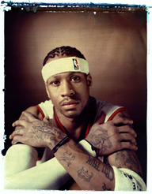
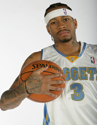
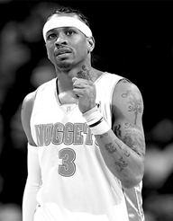
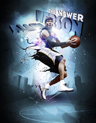

进入NBA之前的岁月
篮球对于这个出身弗吉尼亚贫民窟的小矮子而言，不仅仅是摆脱一个阶级的手段，他代表了一个虔诚的黑人天主教徒的全部信仰和价值观。
也许出身阶级不是影响一个人性格和命运的决定性因素，但对于像艾弗森这样的赤贫阶层而言，他们其实只有两个选择——反抗或死亡。
艾弗森整个童年的回忆可能仅仅是污水和母亲的微笑，艾弗森当时居住在弗吉尼亚州汉普顿的排污管道上，排污管经常爆裂，使艾弗森一家被整个城市的污水完全淹没。
对于他们而言，逃离底层的唯一筹码只有上帝赐予他们的篮球天赋。
上帝、母亲和托尼
母亲安妮绝对是最早发现艾弗森篮球天赋的人，她总在艾弗森企图退缩时说：“你必须为篮球付出一切，这是唯一能改变你生活现状的机会。”
这句话在艾弗森的职业生涯里起了至关重要的作用，瘦弱的艾弗森在 NBA 面对所有壮汉时都告诉自己：“这家伙企图剥夺我现在拥有的一切，企图把我扔回那个建在排污管上的房子里。”这总使他带着怒火去战斗。
除了母亲和一个叫托尼·克拉克的大孩子外，艾弗森从来没有偶像或榜样。克拉克比艾弗森大7岁，他总是不停地鼓励艾弗森：“ 你能成为一个了不起的人，在篮球场上你能击败任何对手。”


入狱！种族歧视牺牲品
艾弗森生活里没有属于阳光的故事，特别是在拥有种族歧视的弗吉尼亚州。
关于艾弗森在 1993 年入狱的经历，直到今天依然影响着全联盟对他的看法，也影响了他对整个世界的看法。
现在没有人知道 1993 年那个情人节之夜到底发生了什么，但所有人都带着一种似是而非的态度认为艾弗森有罪，没有人想过一个黑人是否在该案中受到了不公平待遇。
多年以后，艾弗森在回忆自己这段监狱生活时，感触最深的是：对于他这样出身底层的黑人，反抗是生存的唯一机会。从此以后无论艾弗森面对多么强大的对手，他的眼睛里除了愤怒没有别的。
除了篮球，别无选择
艾弗森的声名使他在高中毕业选择大学时并没有太多空间，尽管 Nike 训练营非常器重他，但老实说，很多名校都压根儿没考虑过刚刚从监狱出来的艾弗森。
不得不提及乔治城大学的主帅约翰·汤普森，他像父亲一样对待艾弗森，在安妮主动找到汤普森问他愿不愿意给艾弗森一个机会时，汤普森说：“ OK ，我需要的只是篮球。”
1996 年选秀大会，费城 76 人在第一顺位选择了艾弗森。他并没有像很多新秀状元那样激动，也许早在10年甚至更早以前，他就已经做好了一切准备。
